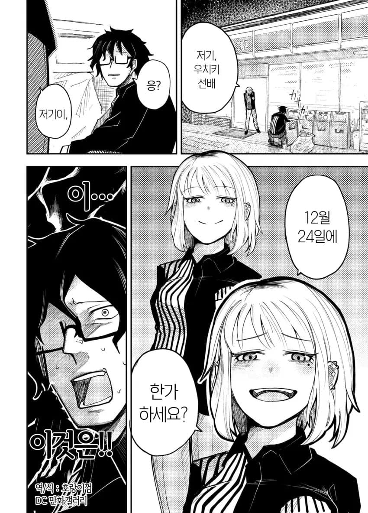
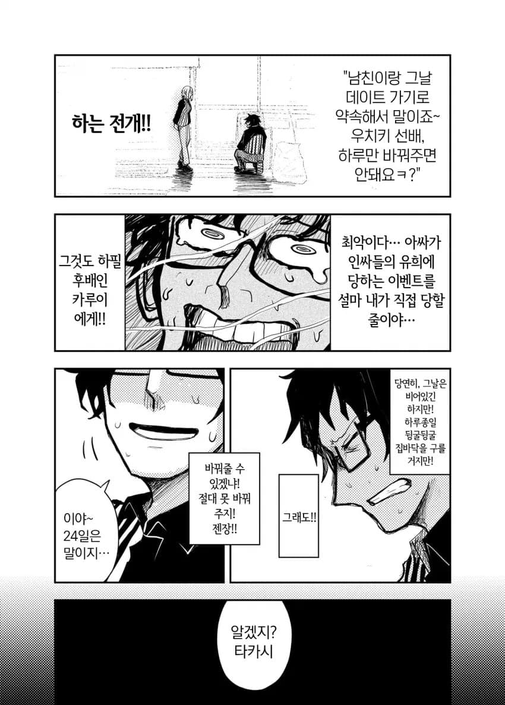
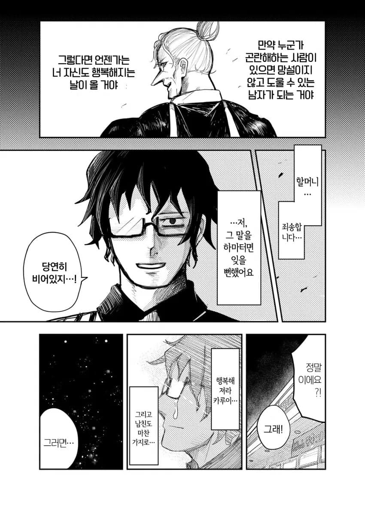
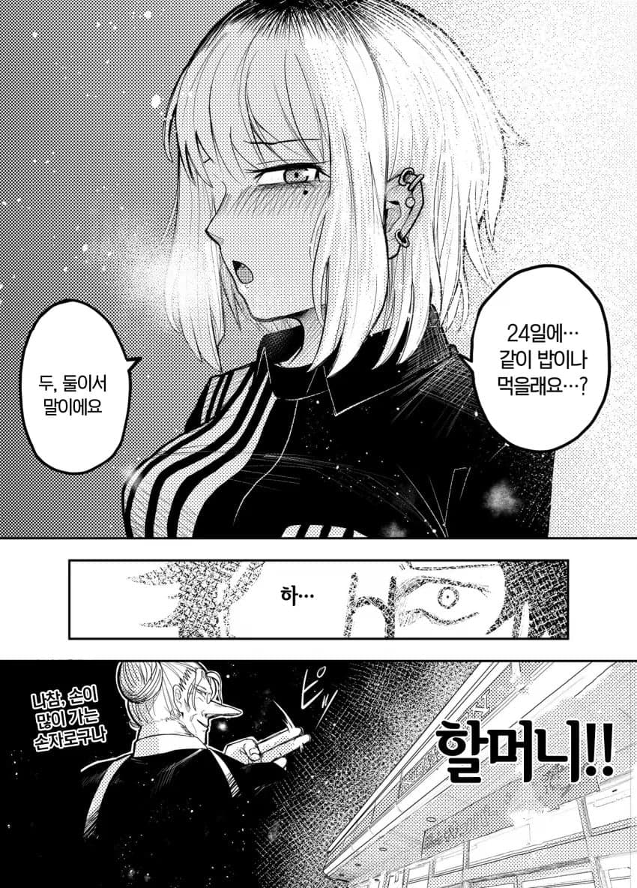
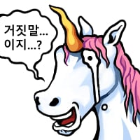

아하 남친이 네토성향이구나



미친
할머니 생김새가 갓슈벨에 나오는 할아버지 닮았어
할머님 닮아서 코가 길듯 그럼 아래도 길다는 말인데


아앗 기분 좋아
미안해요... 우치키 선배...
24일에 같이 있을 수 없게 되어버렸어요오오
우우
할머니 뭔가 헌헌에 나오실꺼 같이 생기셨네요
할머니 정정하실거같은데
Sex
zzzz
이 할머니 코가 대단하다